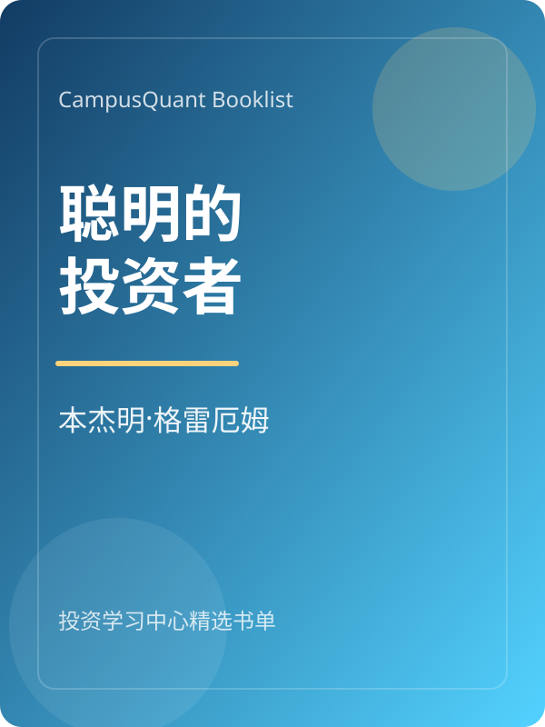
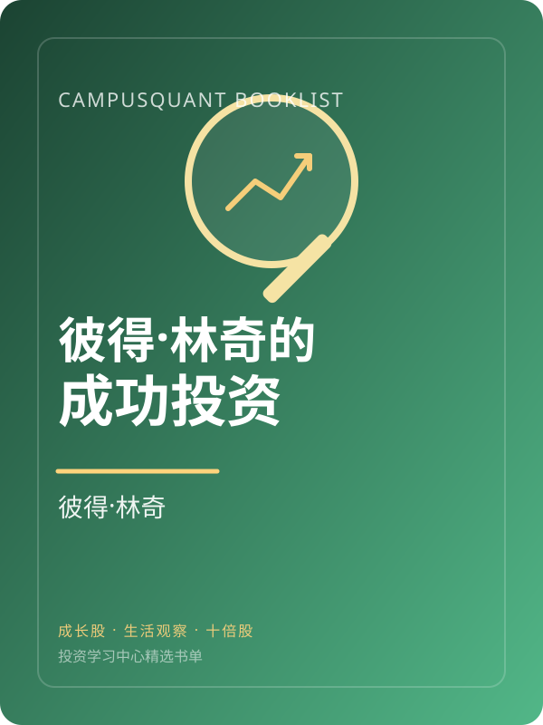
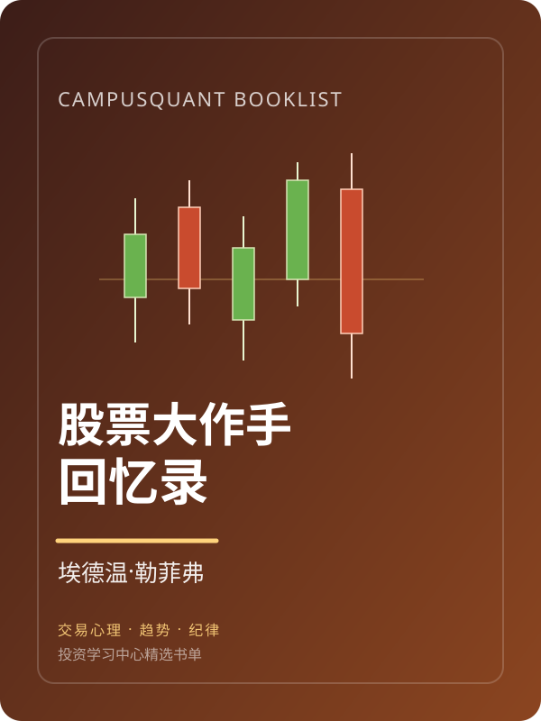
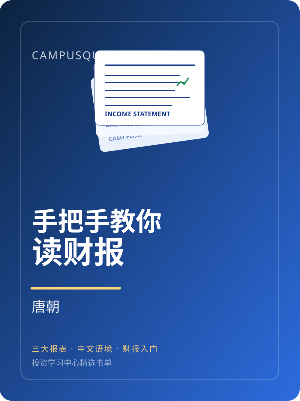
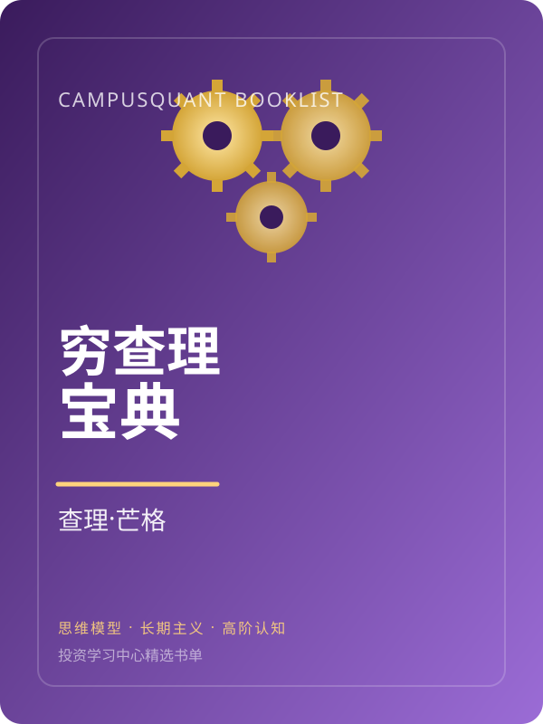
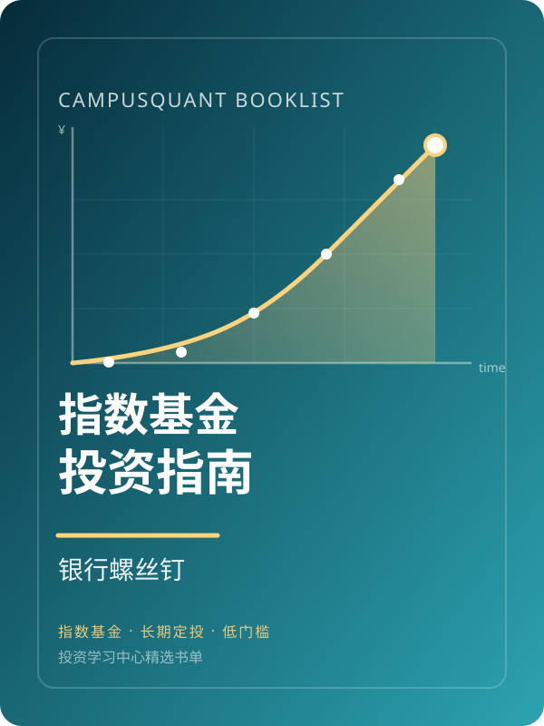
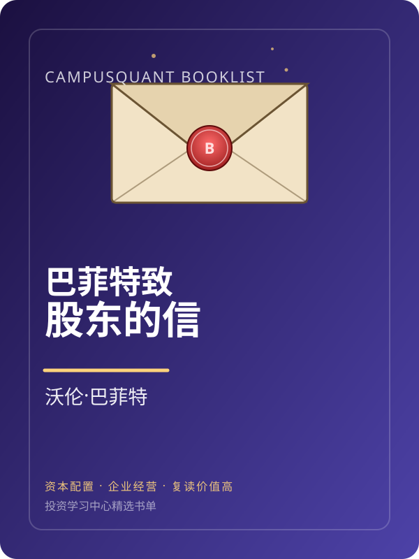
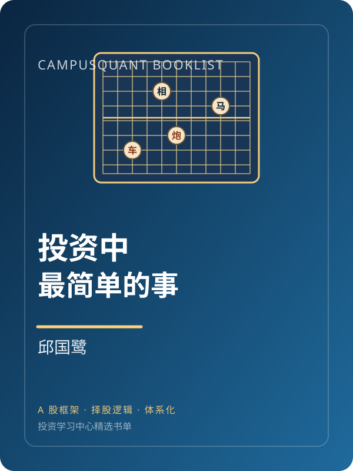

入门 / 价值投资难度 3/5
聪明的投资者
学会安全边际、市场先生和投资者心理边界。这本书最适合建立"价格不等于价值"的第一性原理。
六大模块每个都是一份完整的小教程，涵盖开户流程、市场规则、财报阅读、估值判断、风控底线和实战案例。点击任意模块卡片即可展开完整内容，支持键盘 ← → 快速切换。
每个模块点开后都有 5 个子章节，涵盖概念、案例、操作步骤和常见误区，写给完全零基础的大学生。
按类别筛选，每篇都配完整正文、预计阅读时长和适读难度。可直接点击跳到详情页继续阅读。
8 本覆盖入门到进阶的投资经典，每本书都给出主题标签、难度和适读建议。







